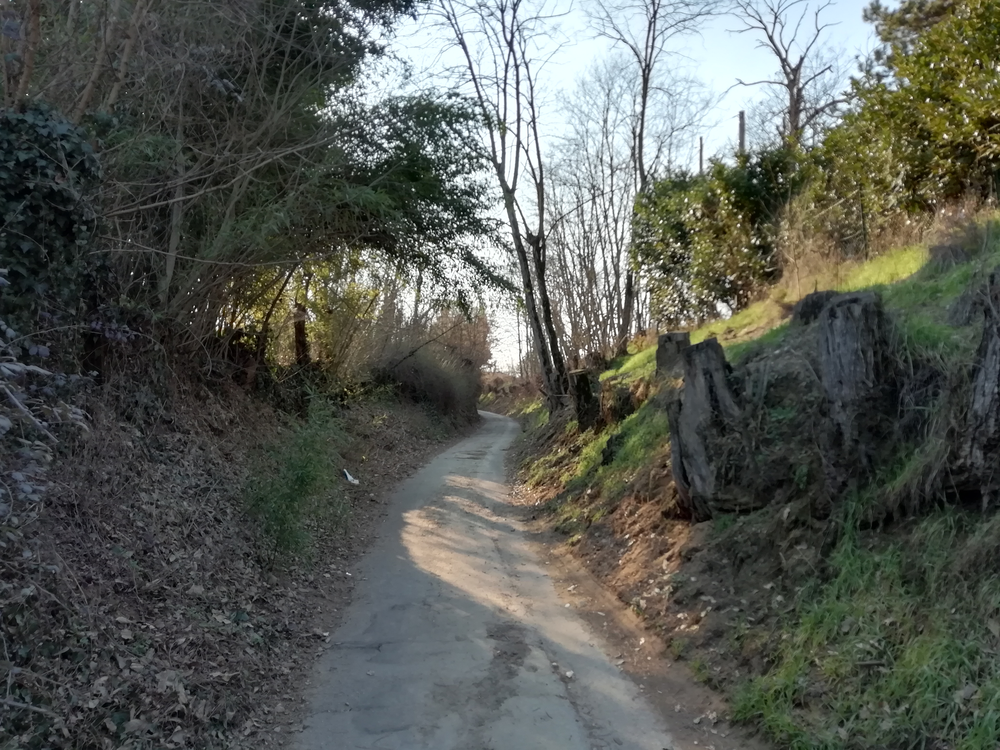
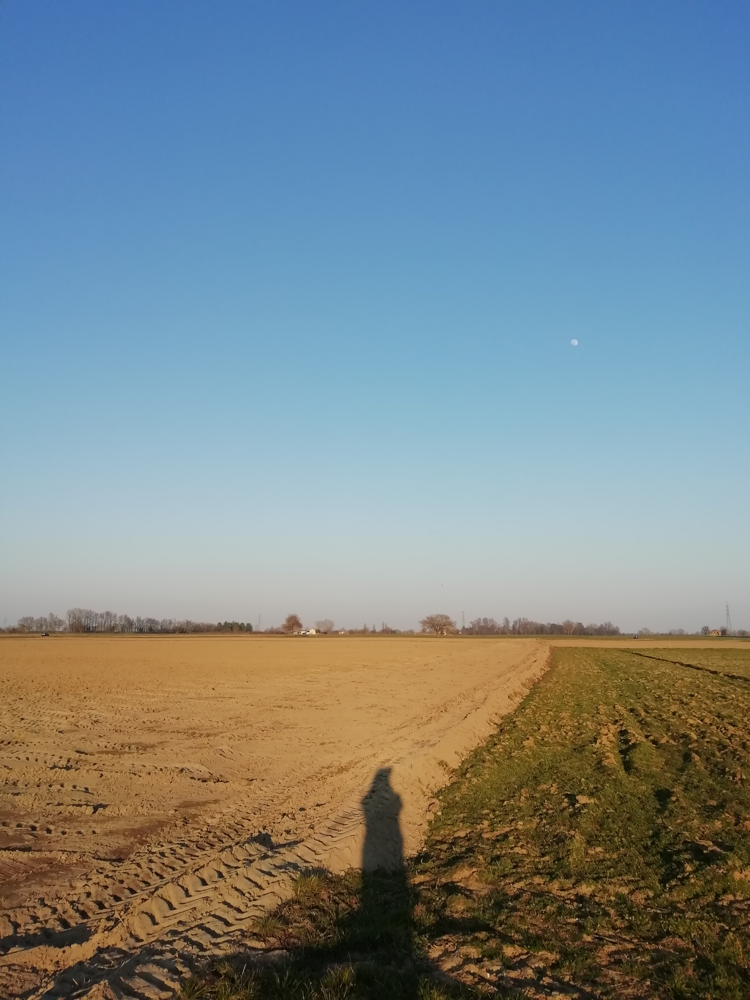
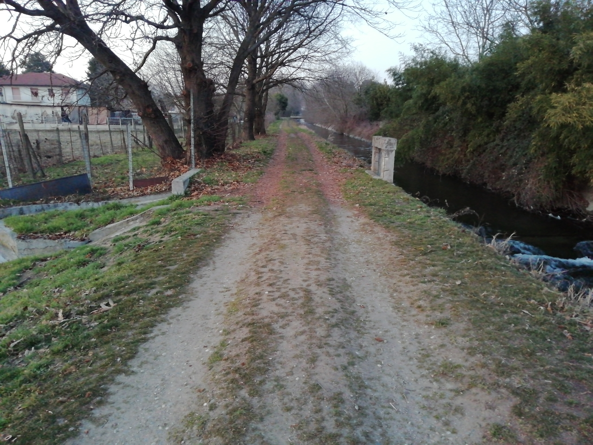

<!DOCTYPE html>
<head>
    <meta http-equiv="content-type" content="text/html; charset=UTF-8" />

        <script>
            L_NO_TOUCH = false;
            L_DISABLE_3D = false;
        </script>

    <style>html, body {width: 100%;height: 100%;margin: 0;padding: 0;}</style>
    <style>#map {position:absolute;top:0;bottom:0;right:0;left:0;}</style>
    <script src="https://cdn.jsdelivr.net/npm/leaflet@1.6.0/dist/leaflet.js"></script>
    <script src="https://code.jquery.com/jquery-1.12.4.min.js"></script>
    <script src="https://maxcdn.bootstrapcdn.com/bootstrap/3.2.0/js/bootstrap.min.js"></script>
    <script src="https://cdnjs.cloudflare.com/ajax/libs/Leaflet.awesome-markers/2.0.2/leaflet.awesome-markers.js"></script>
    <link rel="stylesheet" href="https://cdn.jsdelivr.net/npm/leaflet@1.6.0/dist/leaflet.css"/>
    <link rel="stylesheet" href="https://maxcdn.bootstrapcdn.com/bootstrap/3.2.0/css/bootstrap.min.css"/>
    <link rel="stylesheet" href="https://maxcdn.bootstrapcdn.com/bootstrap/3.2.0/css/bootstrap-theme.min.css"/>
    <link rel="stylesheet" href="https://maxcdn.bootstrapcdn.com/font-awesome/4.6.3/css/font-awesome.min.css"/>
    <link rel="stylesheet" href="https://cdnjs.cloudflare.com/ajax/libs/Leaflet.awesome-markers/2.0.2/leaflet.awesome-markers.css"/>
    <link rel="stylesheet" href="https://cdn.jsdelivr.net/gh/python-visualization/folium/folium/templates/leaflet.awesome.rotate.min.css"/>

            <meta name="viewport" content="width=device-width,
                initial-scale=1.0, maximum-scale=1.0, user-scalable=no" />
            <style>
                #map_88dfe80c9b0640268dfc3dc80097db54 {
                    position: relative;
                    width: 100.0%;
                    height: 100.0%;
                    left: 0.0%;
                    top: 0.0%;
                }
            </style>

</head>
<body>

            <div class="folium-map" id="map_88dfe80c9b0640268dfc3dc80097db54" ></div>

</body>
<script>

            var map_88dfe80c9b0640268dfc3dc80097db54 = L.map(
                "map_88dfe80c9b0640268dfc3dc80097db54",
                {
                    center: [45.317245, 8.858102],
                    crs: L.CRS.EPSG3857,
                    maxBounds: [[45.25, 8.77], [45.38, 8.95]],
                    zoom: 12,
                    zoomControl: true,
                    preferCanvas: false,
                }
            );


            var tile_layer_817977373d6b429489e1b4bba228a8c3 = L.tileLayer(
                "https://{s}.tile.openstreetmap.org/{z}/{x}/{y}.png",
                {"attribution": "Data by \u0026copy; \u003ca href=\"http://openstreetmap.org\"\u003eOpenStreetMap\u003c/a\u003e, under \u003ca href=\"http://www.openstreetmap.org/copyright\"\u003eODbL\u003c/a\u003e.", "detectRetina": false, "maxNativeZoom": 18, "maxZoom": 18, "minZoom": 12, "noWrap": false, "opacity": 1, "subdomains": "abc", "tms": false}
            ).addTo(map_88dfe80c9b0640268dfc3dc80097db54);


            var marker_4780a83187a44eaeb03d5617f506ff28 = L.marker(
                [45.314712, 8.850959],
                {}
            ).addTo(map_88dfe80c9b0640268dfc3dc80097db54);


        var custom_icon_f1181f6c03ce4c02b1d21b6122db1cdc = L.icon({"iconSize": [30, 30], "iconUrl": "https://emojipedia-us.s3.dualstack.us-west-1.amazonaws.com/thumbs/60/microsoft/74/automobile_1f697.png "});
        marker_4780a83187a44eaeb03d5617f506ff28.setIcon(custom_icon_f1181f6c03ce4c02b1d21b6122db1cdc);


        var popup_adca3861ba15437c9a3ac76334340d1d = L.popup({"maxWidth": "270"});


            var html_b3ee5a9b253140c3a001aebcfc0d39f1 = $(`<div id="html_b3ee5a9b253140c3a001aebcfc0d39f1" style="width: 100.0%; height: 100.0%;"><h1 style = "font-size: 30px;"><b>Traffico di Corso Torino</b></h1><br>PLACEHOLDER<br><br><i>Alice <audio id="audio_AL_CORSO_TORINO_TRAFFICO" loop> <source src="dati/AL_CORSO_TORINO_TRAFFICO/corso torino 9 traffico.mp3" type="audio/mpeg"> </audio></div>`)[0];
            popup_adca3861ba15437c9a3ac76334340d1d.setContent(html_b3ee5a9b253140c3a001aebcfc0d39f1);


        marker_4780a83187a44eaeb03d5617f506ff28.bindPopup(popup_adca3861ba15437c9a3ac76334340d1d)
marker_4780a83187a44eaeb03d5617f506ff28.on('click', function (e) {this.openPopup(); document.getElementById('audio_AL_CORSO_TORINO_TRAFFICO').play();});
        ;


            var marker_5e69b04f64a24144a77ef9ffc5957c1c = L.marker(
                [45.314191, 8.854374],
                {}
            ).addTo(map_88dfe80c9b0640268dfc3dc80097db54);


        var custom_icon_35bebce65d074665a5192756390ce7ef = L.icon({"iconSize": [30, 30], "iconUrl": "https://emojipedia-us.s3.dualstack.us-west-1.amazonaws.com/thumbs/160/microsoft/74/water-wave_1f30a.png "});
        marker_5e69b04f64a24144a77ef9ffc5957c1c.setIcon(custom_icon_35bebce65d074665a5192756390ce7ef);


        var popup_f13e434b5fa445ad9c3c2408cb7b01f4 = L.popup({"maxWidth": "270"});


            var html_877d1c8bed584729b9b614b4ac291446 = $(`<div id="html_877d1c8bed584729b9b614b4ac291446" style="width: 100.0%; height: 100.0%;"><h1 style = "font-size: 30px;"><b>Il mulino di Via Mulini</b></h1><br>PLACEHOLDER<br><br><i>Alice <audio id="audio_AL_VIA_MULINI_MULINO" loop> <source src="dati/AL_VIA_MULINI_MULINO/mulino via mulini.mp3" type="audio/mpeg"> </audio></div>`)[0];
            popup_f13e434b5fa445ad9c3c2408cb7b01f4.setContent(html_877d1c8bed584729b9b614b4ac291446);


        marker_5e69b04f64a24144a77ef9ffc5957c1c.bindPopup(popup_f13e434b5fa445ad9c3c2408cb7b01f4)
marker_5e69b04f64a24144a77ef9ffc5957c1c.on('click', function (e) {this.openPopup(); document.getElementById('audio_AL_VIA_MULINI_MULINO').play();});
        ;


            var marker_f8b38293d8314d3b823d8a7f808990e4 = L.marker(
                [45.319865, 8.910479],
                {}
            ).addTo(map_88dfe80c9b0640268dfc3dc80097db54);


        var custom_icon_6ae9675498aa4466afd7b8ac062664f4 = L.icon({"iconSize": [30, 30], "iconUrl": "https://emojipedia-us.s3.dualstack.us-west-1.amazonaws.com/thumbs/160/microsoft/74/duck_1f986.png "});
        marker_f8b38293d8314d3b823d8a7f808990e4.setIcon(custom_icon_6ae9675498aa4466afd7b8ac062664f4);


        var popup_9e758b2ad7d649188ec8db2c0aed4293 = L.popup({"maxWidth": "270"});


            var html_79b54ca770c745a4a077f109fac73f21 = $(`<div id="html_79b54ca770c745a4a077f109fac73f21" style="width: 100.0%; height: 100.0%;"><h1 style = "font-size: 30px;"><b>Papere</b></h1><br><br>PLACEHOLDER<br /><br><br><i>Alice <audio id="audio_AL_AYALA" loop> <source src="dati/AL_AYALA/Copia di ayala-papere.mp3" type="audio/mpeg"> </audio></div>`)[0];
            popup_9e758b2ad7d649188ec8db2c0aed4293.setContent(html_79b54ca770c745a4a077f109fac73f21);


        marker_f8b38293d8314d3b823d8a7f808990e4.bindPopup(popup_9e758b2ad7d649188ec8db2c0aed4293)
marker_f8b38293d8314d3b823d8a7f808990e4.on('click', function (e) {this.openPopup(); document.getElementById('audio_AL_AYALA').play();});
        ;


            var marker_448117090ee942bf97c3bf9b021e5cce = L.marker(
                [45.319209, 8.911778],
                {}
            ).addTo(map_88dfe80c9b0640268dfc3dc80097db54);


        var custom_icon_2ef6c33efdeb49bf85ccc2d0ad53117c = L.icon({"iconSize": [30, 30], "iconUrl": "https://emojipedia-us.s3.dualstack.us-west-1.amazonaws.com/thumbs/160/microsoft/74/bird_1f426.png "});
        marker_448117090ee942bf97c3bf9b021e5cce.setIcon(custom_icon_2ef6c33efdeb49bf85ccc2d0ad53117c);


        var popup_a32892db6d4f404da7fd800c04be2083 = L.popup({"maxWidth": "270"});


            var html_0fe7c0e36ede4a7382b5161ccdd82c72 = $(`<div id="html_0fe7c0e36ede4a7382b5161ccdd82c72" style="width: 100.0%; height: 100.0%;"><h1 style = "font-size: 30px;"><b>Gallinelle</b></h1><br>PLACEHOLDER<br /><br><br><i>Alice <audio id="audio_AL_AYALA 2" loop> <source src="dati/AL_AYALA 2/Copia di gallinelle-ayala.mp3" type="audio/mpeg"> </audio></div>`)[0];
            popup_a32892db6d4f404da7fd800c04be2083.setContent(html_0fe7c0e36ede4a7382b5161ccdd82c72);


        marker_448117090ee942bf97c3bf9b021e5cce.bindPopup(popup_a32892db6d4f404da7fd800c04be2083)
marker_448117090ee942bf97c3bf9b021e5cce.on('click', function (e) {this.openPopup(); document.getElementById('audio_AL_AYALA 2').play();});
        ;


            var marker_b6a6e0d55b554c40aefed97b230f89ac = L.marker(
                [45.320629, 8.909743],
                {}
            ).addTo(map_88dfe80c9b0640268dfc3dc80097db54);


        var custom_icon_dcc3f03148fc4721873bbb8ed4701c84 = L.icon({"iconSize": [30, 30], "iconUrl": "https://emojipedia-us.s3.dualstack.us-west-1.amazonaws.com/thumbs/60/microsoft/74/older-man_emoji-modifier-fitzpatrick-type-1-2_1f474-1f3fb_1f3fb.png "});
        marker_b6a6e0d55b554c40aefed97b230f89ac.setIcon(custom_icon_dcc3f03148fc4721873bbb8ed4701c84);


        var popup_541ba9c9316b4fda804a8c9de9c2b7a0 = L.popup({"maxWidth": "270"});


            var html_937d5ceb56a04d13b5e8611fbbd326bb = $(`<div id="html_937d5ceb56a04d13b5e8611fbbd326bb" style="width: 100.0%; height: 100.0%;"><h1 style = "font-size: 30px;"><b>Anziani</b></h1><br>PLACEHOLDER<br /><br><br><i>Alice <audio id="audio_AL_AYALA 3" loop> <source src="dati/AL_AYALA 3/Copia di ayala vecchi che parlano.wav" type="audio/wav"> </audio></div>`)[0];
            popup_541ba9c9316b4fda804a8c9de9c2b7a0.setContent(html_937d5ceb56a04d13b5e8611fbbd326bb);


        marker_b6a6e0d55b554c40aefed97b230f89ac.bindPopup(popup_541ba9c9316b4fda804a8c9de9c2b7a0)
marker_b6a6e0d55b554c40aefed97b230f89ac.on('click', function (e) {this.openPopup(); document.getElementById('audio_AL_AYALA 3').play();});
        ;


            var marker_d136007bc7314c62a382eadf4afbf019 = L.marker(
                [45.288236, 8.904653],
                {}
            ).addTo(map_88dfe80c9b0640268dfc3dc80097db54);


        var custom_icon_05ed834c2d114b21919c0fd8d268065d = L.icon({"iconSize": [30, 30], "iconUrl": "https://emojipedia-us.s3.dualstack.us-west-1.amazonaws.com/thumbs/60/microsoft/74/fallen-leaf_1f342.png "});
        marker_d136007bc7314c62a382eadf4afbf019.setIcon(custom_icon_05ed834c2d114b21919c0fd8d268065d);


        var popup_283e3fc5b3f04017984e5a99b3bf5092 = L.popup({"maxWidth": "270"});


            var html_05009316a2bd41ff8331a9f693dca8db = $(`<div id="html_05009316a2bd41ff8331a9f693dca8db" style="width: 100.0%; height: 100.0%;"><h1 style = "font-size: 30px;"><b>Marcite</b></h1><br><br>PLACEHOLDER<br /><br><br><i>Alice <audio id="audio_AL_SFORZESCA MARCITE" loop> <source src="dati/AL_SFORZESCA MARCITE/Copia di marcite-sforzesca.mp3" type="audio/mpeg"> </audio></div>`)[0];
            popup_283e3fc5b3f04017984e5a99b3bf5092.setContent(html_05009316a2bd41ff8331a9f693dca8db);


        marker_d136007bc7314c62a382eadf4afbf019.bindPopup(popup_283e3fc5b3f04017984e5a99b3bf5092)
marker_d136007bc7314c62a382eadf4afbf019.on('click', function (e) {this.openPopup(); document.getElementById('audio_AL_SFORZESCA MARCITE').play();});
        ;


            var marker_3a16958be3f24d1aa9a7b9e1ded4ac98 = L.marker(
                [45.316647, 8.857617],
                {}
            ).addTo(map_88dfe80c9b0640268dfc3dc80097db54);


        var custom_icon_71d6d066cf5c472d84248ef9012e3feb = L.icon({"iconSize": [30, 30], "iconUrl": "https://emojipedia-us.s3.dualstack.us-west-1.amazonaws.com/thumbs/60/microsoft/74/bell_1f514.png "});
        marker_3a16958be3f24d1aa9a7b9e1ded4ac98.setIcon(custom_icon_71d6d066cf5c472d84248ef9012e3feb);


        var popup_705a63f1db954a7fa2ec8114c769353e = L.popup({"maxWidth": "270"});


            var html_6713e15815a549bf8c1427db494d4a2e = $(`<div id="html_6713e15815a549bf8c1427db494d4a2e" style="width: 100.0%; height: 100.0%;"><h1 style = "font-size: 30px;"><b>Campane</b></h1><br><br>PLACEHOLDER<br /><br><br><i>Alice <audio id="audio_AL_CASTELLO CAMPANE" loop> <source src="dati/AL_CASTELLO CAMPANE/Copia di castello-campane.mp3" type="audio/mpeg"> </audio></div>`)[0];
            popup_705a63f1db954a7fa2ec8114c769353e.setContent(html_6713e15815a549bf8c1427db494d4a2e);


        marker_3a16958be3f24d1aa9a7b9e1ded4ac98.bindPopup(popup_705a63f1db954a7fa2ec8114c769353e)
marker_3a16958be3f24d1aa9a7b9e1ded4ac98.on('click', function (e) {this.openPopup(); document.getElementById('audio_AL_CASTELLO CAMPANE').play();});
        ;


            var marker_2d7212535e8148d5a42f8099660f8ed9 = L.marker(
                [45.315874, 8.858551],
                {}
            ).addTo(map_88dfe80c9b0640268dfc3dc80097db54);


        var custom_icon_a6d2d771087e459da8bc946d60cc2057 = L.icon({"iconSize": [30, 30], "iconUrl": "https://emojipedia-us.s3.dualstack.us-west-1.amazonaws.com/thumbs/60/microsoft/309/woman-walking_1f6b6-200d-2640-fe0f.png "});
        marker_2d7212535e8148d5a42f8099660f8ed9.setIcon(custom_icon_a6d2d771087e459da8bc946d60cc2057);


        var popup_778014764e934aa0b546be2b644ebee2 = L.popup({"maxWidth": "270"});


            var html_b264576c7b6b4a99a69c86ec42cbb358 = $(`<div id="html_b264576c7b6b4a99a69c86ec42cbb358" style="width: 100.0%; height: 100.0%;"><h1 style = "font-size: 30px;"><b>Strada coperta</b></h1><br><br>PLACEHOLDER<br /><br><br><i>Alice <audio id="audio_AL_STRADA COPERTA" loop> <source src="dati/AL_STRADA COPERTA/Copia di strada-coperta-sopra-portone.mp3" type="audio/mpeg"> </audio></div>`)[0];
            popup_778014764e934aa0b546be2b644ebee2.setContent(html_b264576c7b6b4a99a69c86ec42cbb358);


        marker_2d7212535e8148d5a42f8099660f8ed9.bindPopup(popup_778014764e934aa0b546be2b644ebee2)
marker_2d7212535e8148d5a42f8099660f8ed9.on('click', function (e) {this.openPopup(); document.getElementById('audio_AL_STRADA COPERTA').play();});
        ;


            var marker_a34def77ef7f4ec6a2c3fa38579caac6 = L.marker(
                [45.313771, 8.804277],
                {}
            ).addTo(map_88dfe80c9b0640268dfc3dc80097db54);


        var custom_icon_29fa82188d2c4c1badfadaf0205c4c8f = L.icon({"iconSize": [30, 30], "iconUrl": "https://emojipedia-us.s3.dualstack.us-west-1.amazonaws.com/thumbs/160/microsoft/74/water-wave_1f30a.png "});
        marker_a34def77ef7f4ec6a2c3fa38579caac6.setIcon(custom_icon_29fa82188d2c4c1badfadaf0205c4c8f);


        var popup_5a339844d07d4df191d7aa952db1a05b = L.popup({"maxWidth": "270"});


            var html_bf79e8900eb34424883b1a023900d9f9 = $(`<div id="html_bf79e8900eb34424883b1a023900d9f9" style="width: 100.0%; height: 100.0%;"><h1 style = "font-size: 30px;"><b>Strada Vignazza</b></h1><br>PLACEHOLDER<br /><br><br><i>Alice <audio id="audio_AL_STRADA VIGNAZZA PICCOLINI" loop> <source src="dati/AL_STRADA VIGNAZZA PICCOLINI/Copia di strada-vignazza-piccolini-su-terdoppio.mp3" type="audio/mpeg"> </audio></div>`)[0];
            popup_5a339844d07d4df191d7aa952db1a05b.setContent(html_bf79e8900eb34424883b1a023900d9f9);


        marker_a34def77ef7f4ec6a2c3fa38579caac6.bindPopup(popup_5a339844d07d4df191d7aa952db1a05b)
marker_a34def77ef7f4ec6a2c3fa38579caac6.on('click', function (e) {this.openPopup(); document.getElementById('audio_AL_STRADA VIGNAZZA PICCOLINI').play();});
        ;


            var marker_3966c1fd852b4223ad578801625fcf9b = L.marker(
                [45.318815, 8.80616],
                {}
            ).addTo(map_88dfe80c9b0640268dfc3dc80097db54);


        var custom_icon_587797bb4a27478ca587dfe335e4d288 = L.icon({"iconSize": [30, 30], "iconUrl": "https://emojipedia-us.s3.dualstack.us-west-1.amazonaws.com/thumbs/160/microsoft/74/water-wave_1f30a.png "});
        marker_3966c1fd852b4223ad578801625fcf9b.setIcon(custom_icon_587797bb4a27478ca587dfe335e4d288);


        var popup_9aa1311a46d749a9812fdda704ceba1b = L.popup({"maxWidth": "270"});


            var html_99a74495aebc41ac89ad49301efcb0c9 = $(`<div id="html_99a74495aebc41ac89ad49301efcb0c9" style="width: 100.0%; height: 100.0%;"><h1 style = "font-size: 30px;"><b>Piccolini</b></h1><br><br>PLACEHOLDER<br /><br><br><i>Alice <audio id="audio_AL_TERDOPPIO PICCOLINI" loop> <source src="dati/AL_TERDOPPIO PICCOLINI/Copia di st. terdoppio piccolini.wav" type="audio/wav"> </audio></div>`)[0];
            popup_9aa1311a46d749a9812fdda704ceba1b.setContent(html_99a74495aebc41ac89ad49301efcb0c9);


        marker_3966c1fd852b4223ad578801625fcf9b.bindPopup(popup_9aa1311a46d749a9812fdda704ceba1b)
marker_3966c1fd852b4223ad578801625fcf9b.on('click', function (e) {this.openPopup(); document.getElementById('audio_AL_TERDOPPIO PICCOLINI').play();});
        ;


            var marker_e1567de51ed0436b825390791c56c95f = L.marker(
                [45.310196, 8.812298],
                {}
            ).addTo(map_88dfe80c9b0640268dfc3dc80097db54);


        var custom_icon_1be8aae6c2c94492831c915a6526e6aa = L.icon({"iconSize": [30, 30], "iconUrl": "https://emojipedia-us.s3.dualstack.us-west-1.amazonaws.com/thumbs/60/microsoft/74/fallen-leaf_1f342.png "});
        marker_e1567de51ed0436b825390791c56c95f.setIcon(custom_icon_1be8aae6c2c94492831c915a6526e6aa);


        var popup_f803a70188ea47d69ae1b484fba980be = L.popup({"maxWidth": "270"});


            var html_15ca083fa4f5453abd8e636b866b13b3 = $(`<div id="html_15ca083fa4f5453abd8e636b866b13b3" style="width: 100.0%; height: 100.0%;"><h1 style = "font-size: 30px;"><b>Via Castellana</b></h1><br>PLACEHOLDER<br /><br><br><i>Alice <audio id="audio_AL_VIA CASTELLANA" loop> <source src="dati/AL_VIA CASTELLANA/Copia di via-castellana-piccolini.mp3" type="audio/mpeg"> </audio></div>`)[0];
            popup_f803a70188ea47d69ae1b484fba980be.setContent(html_15ca083fa4f5453abd8e636b866b13b3);


        marker_e1567de51ed0436b825390791c56c95f.bindPopup(popup_f803a70188ea47d69ae1b484fba980be)
marker_e1567de51ed0436b825390791c56c95f.on('click', function (e) {this.openPopup(); document.getElementById('audio_AL_VIA CASTELLANA').play();});
        ;


            var marker_a31641d36b02449ea3e078a9b146a4cf = L.marker(
                [45.302898, 8.934893],
                {}
            ).addTo(map_88dfe80c9b0640268dfc3dc80097db54);


        var custom_icon_d2901c767a2b4f949f94575e5bea0cf1 = L.icon({"iconSize": [30, 30], "iconUrl": "https://emojipedia-us.s3.dualstack.us-west-1.amazonaws.com/thumbs/160/microsoft/153/swan_1f9a2.png "});
        marker_a31641d36b02449ea3e078a9b146a4cf.setIcon(custom_icon_d2901c767a2b4f949f94575e5bea0cf1);


        var popup_c5349bc4dfbd4de0bb706771e35d9172 = L.popup({"maxWidth": "270"});


            var html_9761aeff5aeb4bb3b28330e77b20402a = $(`<div id="html_9761aeff5aeb4bb3b28330e77b20402a" style="width: 100.0%; height: 100.0%;"><h1 style = "font-size: 30px;"><b>Lapide Boselli</b></h1><br>PLACEHOLDER<br /><br><br><i>Alice <audio id="audio_AL_LAPIDE BOSELLI" loop> <source src="dati/AL_LAPIDE BOSELLI/Copia di volo-cigni-lapide-boselli.mp3" type="audio/mpeg"> </audio></div>`)[0];
            popup_c5349bc4dfbd4de0bb706771e35d9172.setContent(html_9761aeff5aeb4bb3b28330e77b20402a);


        marker_a31641d36b02449ea3e078a9b146a4cf.bindPopup(popup_c5349bc4dfbd4de0bb706771e35d9172)
marker_a31641d36b02449ea3e078a9b146a4cf.on('click', function (e) {this.openPopup(); document.getElementById('audio_AL_LAPIDE BOSELLI').play();});
        ;


            var marker_1fa81ce54a7c4444bc0ab15528bf6856 = L.marker(
                [45.316389, 8.856819],
                {}
            ).addTo(map_88dfe80c9b0640268dfc3dc80097db54);


        var custom_icon_7120b4f1e73c4f1798645ce3023d5153 = L.icon({"iconSize": [30, 30], "iconUrl": "https://emojipedia-us.s3.dualstack.us-west-1.amazonaws.com/thumbs/60/microsoft/74/speaking-head-in-silhouette_1f5e3.png "});
        marker_1fa81ce54a7c4444bc0ab15528bf6856.setIcon(custom_icon_7120b4f1e73c4f1798645ce3023d5153);


        var popup_9fdaf09772a94bcebd0d3d82dc42a8b7 = L.popup({"maxWidth": "270"});


            var html_51c39b1dd3d54301a39b11f6a9f7e79d = $(`<div id="html_51c39b1dd3d54301a39b11f6a9f7e79d" style="width: 100.0%; height: 100.0%;"><h1 style = "font-size: 30px;"><b>Castello alle 18</b></h1><br>PLACEHOLDER<br><br><i>Andrea <audio id="audio_AN_CASTELLO_ORE_18" loop> <source src="dati/AN_CASTELLO_ORE_18/castello ore 18.mp3" type="audio/mpeg"> </audio></div>`)[0];
            popup_9fdaf09772a94bcebd0d3d82dc42a8b7.setContent(html_51c39b1dd3d54301a39b11f6a9f7e79d);


        marker_1fa81ce54a7c4444bc0ab15528bf6856.bindPopup(popup_9fdaf09772a94bcebd0d3d82dc42a8b7)
marker_1fa81ce54a7c4444bc0ab15528bf6856.on('click', function (e) {this.openPopup(); document.getElementById('audio_AN_CASTELLO_ORE_18').play();});
        ;


            var marker_de78b738cdd64d048bb47522b7369bab = L.marker(
                [45.315783, 8.856105],
                {}
            ).addTo(map_88dfe80c9b0640268dfc3dc80097db54);


        var custom_icon_3ddfb63485f34f5e8fe602217c213a0c = L.icon({"iconSize": [30, 30], "iconUrl": "https://emojipedia-us.s3.dualstack.us-west-1.amazonaws.com/thumbs/60/microsoft/74/speaking-head-in-silhouette_1f5e3.png "});
        marker_de78b738cdd64d048bb47522b7369bab.setIcon(custom_icon_3ddfb63485f34f5e8fe602217c213a0c);


        var popup_c3e89d15ff5647748e86edc99b667fa3 = L.popup({"maxWidth": "270"});


            var html_7716a72cc9524c11a9fe70485d3f351f = $(`<div id="html_7716a72cc9524c11a9fe70485d3f351f" style="width: 100.0%; height: 100.0%;"><h1 style = "font-size: 30px;"><b>Portone</b></h1><br>PLACEHOLDER<br><br><i>Andrea <audio id="audio_AN_PORTONE" loop> <source src="dati/AN_PORTONE/portone.mp3" type="audio/mpeg"> </audio></div>`)[0];
            popup_c3e89d15ff5647748e86edc99b667fa3.setContent(html_7716a72cc9524c11a9fe70485d3f351f);


        marker_de78b738cdd64d048bb47522b7369bab.bindPopup(popup_c3e89d15ff5647748e86edc99b667fa3)
marker_de78b738cdd64d048bb47522b7369bab.on('click', function (e) {this.openPopup(); document.getElementById('audio_AN_PORTONE').play();});
        ;


            var marker_87b2b70af80f47d9a4ecc65f82ac63aa = L.marker(
                [45.314307, 8.854067],
                {}
            ).addTo(map_88dfe80c9b0640268dfc3dc80097db54);


        var custom_icon_375118187230496b917468f2fbd2ead9 = L.icon({"iconSize": [30, 30], "iconUrl": "https://emojipedia-us.s3.dualstack.us-west-1.amazonaws.com/thumbs/160/microsoft/74/water-wave_1f30a.png "});
        marker_87b2b70af80f47d9a4ecc65f82ac63aa.setIcon(custom_icon_375118187230496b917468f2fbd2ead9);


        var popup_0e5244f0ca864e33ba8d66dd703820e9 = L.popup({"maxWidth": "270"});


            var html_c3b57334f7b84e82ab7dc0e6ae7acd62 = $(`<div id="html_c3b57334f7b84e82ab7dc0e6ae7acd62" style="width: 100.0%; height: 100.0%;"><h1 style = "font-size: 30px;"><b>Via Mulini</b></h1><br>PLACEHOLDER<br><br><i>Andrea <audio id="audio_AN_VIA_MULINI" loop> <source src="dati/AN_VIA_MULINI/via mulini acqua.mp3" type="audio/mpeg"> </audio></div>`)[0];
            popup_0e5244f0ca864e33ba8d66dd703820e9.setContent(html_c3b57334f7b84e82ab7dc0e6ae7acd62);


        marker_87b2b70af80f47d9a4ecc65f82ac63aa.bindPopup(popup_0e5244f0ca864e33ba8d66dd703820e9)
marker_87b2b70af80f47d9a4ecc65f82ac63aa.on('click', function (e) {this.openPopup(); document.getElementById('audio_AN_VIA_MULINI').play();});
        ;


            var marker_7495fa5065a445d99c729355fde023ea = L.marker(
                [45.3230625, 8.850245651],
                {}
            ).addTo(map_88dfe80c9b0640268dfc3dc80097db54);


        var custom_icon_e763cd1b1262496b9eddb8283b3cad99 = L.icon({"iconSize": [30, 30], "iconUrl": "https://emojipedia-us.s3.dualstack.us-west-1.amazonaws.com/thumbs/160/microsoft/74/motor-scooter_1f6f5.png "});
        marker_7495fa5065a445d99c729355fde023ea.setIcon(custom_icon_e763cd1b1262496b9eddb8283b3cad99);


        var popup_f3aa957b143549fc93501020d0a19541 = L.popup({"maxWidth": "270"});


            var html_a1ff9373e5fb4a75b6fca1bb2a968bd6 = $(`<div id="html_a1ff9373e5fb4a75b6fca1bb2a968bd6" style="width: 100.0%; height: 100.0%;"><h1 style = "font-size: 30px;"><b>Pizzeria</b></h1><br>PLACEHOLDER<br><br><i>Guido <audio id="audio_GU_VIALE_MONTEGRAPPA_PIZZERIA" loop> <source src="dati/GU_VIALE_MONTEGRAPPA_PIZZERIA/pizzeria.mp3" type="audio/mpeg"> </audio></div>`)[0];
            popup_f3aa957b143549fc93501020d0a19541.setContent(html_a1ff9373e5fb4a75b6fca1bb2a968bd6);


        marker_7495fa5065a445d99c729355fde023ea.bindPopup(popup_f3aa957b143549fc93501020d0a19541)
marker_7495fa5065a445d99c729355fde023ea.on('click', function (e) {this.openPopup(); document.getElementById('audio_GU_VIALE_MONTEGRAPPA_PIZZERIA').play();});
        ;


            var marker_8e8adcc0946c4befa3955cbf693f28fa = L.marker(
                [45.31211904, 8.860001045],
                {}
            ).addTo(map_88dfe80c9b0640268dfc3dc80097db54);


        var custom_icon_e11b828b556d484bba585b33a8483e9c = L.icon({"iconSize": [30, 30], "iconUrl": "https://emojipedia-us.s3.dualstack.us-west-1.amazonaws.com/thumbs/160/microsoft/74/water-wave_1f30a.png "});
        marker_8e8adcc0946c4befa3955cbf693f28fa.setIcon(custom_icon_e11b828b556d484bba585b33a8483e9c);


        var popup_734899cac48e4dac8d2ebe845859ba3f = L.popup({"maxWidth": "270"});


            var html_4fd970ed5486485a811496a95472804f = $(`<div id="html_4fd970ed5486485a811496a95472804f" style="width: 100.0%; height: 100.0%;"><h1 style = "font-size: 30px;"><b>Giacchetta Canale</b></h1><br>PLACEHOLDER<br><br><i>Guido <audio id="audio_GU_GIACCHETTA_CANALE" loop> <source src="dati/GU_GIACCHETTA_CANALE/ZOOM0027.mp3" type="audio/mpeg"> </audio></div>`)[0];
            popup_734899cac48e4dac8d2ebe845859ba3f.setContent(html_4fd970ed5486485a811496a95472804f);


        marker_8e8adcc0946c4befa3955cbf693f28fa.bindPopup(popup_734899cac48e4dac8d2ebe845859ba3f)
marker_8e8adcc0946c4befa3955cbf693f28fa.on('click', function (e) {this.openPopup(); document.getElementById('audio_GU_GIACCHETTA_CANALE').play();});
        ;


            var marker_001bdde480454b738a92316b70256722 = L.marker(
                [45.3064081, 8.866924562],
                {}
            ).addTo(map_88dfe80c9b0640268dfc3dc80097db54);


        var custom_icon_c6fe3930746a46ab9bf35fa6b2aa4f0b = L.icon({"iconSize": [30, 30], "iconUrl": "https://emojipedia-us.s3.dualstack.us-west-1.amazonaws.com/thumbs/60/microsoft/74/umbrella-with-rain-drops_2614.png "});
        marker_001bdde480454b738a92316b70256722.setIcon(custom_icon_c6fe3930746a46ab9bf35fa6b2aa4f0b);


        var popup_b1d03d418a4a4f2eb25c9e2c0257ad00 = L.popup({"maxWidth": "270"});


            var html_8f23cb1dba3f4508b2649bbd0924ab6c = $(`<div id="html_8f23cb1dba3f4508b2649bbd0924ab6c" style="width: 100.0%; height: 100.0%;"><h1 style = "font-size: 30px;"><b>Via de chirico Canale Pioggia</b></h1><br>PLACEHOLDER<br><br><i>Guido <audio id="audio_GU_VIA_DE_CHIRICO_CANALE_v2" loop> <source src="dati/GU_VIA_DE_CHIRICO_CANALE_v2/ZOOM0029.mp3" type="audio/mpeg"> </audio></div>`)[0];
            popup_b1d03d418a4a4f2eb25c9e2c0257ad00.setContent(html_8f23cb1dba3f4508b2649bbd0924ab6c);


        marker_001bdde480454b738a92316b70256722.bindPopup(popup_b1d03d418a4a4f2eb25c9e2c0257ad00)
marker_001bdde480454b738a92316b70256722.on('click', function (e) {this.openPopup(); document.getElementById('audio_GU_VIA_DE_CHIRICO_CANALE_v2').play();});
        ;


            var marker_7b99770bf9064f3d870b80aaba470c85 = L.marker(
                [45.30644102, 8.889899845],
                {}
            ).addTo(map_88dfe80c9b0640268dfc3dc80097db54);


        var custom_icon_b72c100758944b2f86e15d10da0fa251 = L.icon({"iconSize": [30, 30], "iconUrl": "https://emojipedia-us.s3.dualstack.us-west-1.amazonaws.com/thumbs/60/microsoft/74/fallen-leaf_1f342.png "});
        marker_7b99770bf9064f3d870b80aaba470c85.setIcon(custom_icon_b72c100758944b2f86e15d10da0fa251);


        var popup_a825b39588fe4f13938a75c02cc93d2f = L.popup({"maxWidth": "270"});


            var html_fc79db823dc741dfb9d433e9256ea8fe = $(`<div id="html_fc79db823dc741dfb9d433e9256ea8fe" style="width: 100.0%; height: 100.0%;"><h1 style = "font-size: 30px;"><b>Strada per laghi di santa marta</b></h1><br>PLACEHOLDER<br><br><i>Guido <audio id="audio_GU_AGRITURISMO_COLDIRETTI" loop> <source src="dati/GU_AGRITURISMO_COLDIRETTI/ZOOM0025.mp3" type="audio/mpeg"> </audio></div>`)[0];
            popup_a825b39588fe4f13938a75c02cc93d2f.setContent(html_fc79db823dc741dfb9d433e9256ea8fe);


        marker_7b99770bf9064f3d870b80aaba470c85.bindPopup(popup_a825b39588fe4f13938a75c02cc93d2f)
marker_7b99770bf9064f3d870b80aaba470c85.on('click', function (e) {this.openPopup(); document.getElementById('audio_GU_AGRITURISMO_COLDIRETTI').play();});
        ;


            var marker_6c5317e6bfd84c9684fac1adf18b8663 = L.marker(
                [45.29917137, 8.905742693],
                {}
            ).addTo(map_88dfe80c9b0640268dfc3dc80097db54);


        var custom_icon_68b930bb26d44fd28db700fb04be245b = L.icon({"iconSize": [30, 30], "iconUrl": "https://emojipedia-us.s3.dualstack.us-west-1.amazonaws.com/thumbs/160/microsoft/74/bird_1f426.png "});
        marker_6c5317e6bfd84c9684fac1adf18b8663.setIcon(custom_icon_68b930bb26d44fd28db700fb04be245b);


        var popup_73fa34bd479b4fa593184fb1977e2c69 = L.popup({"maxWidth": "270"});


            var html_fb8da2837e624f7ba4c4fdf28906d2f7 = $(`<div id="html_fb8da2837e624f7ba4c4fdf28906d2f7" style="width: 100.0%; height: 100.0%;"><h1 style = "font-size: 30px;"><b>Laghetto dei piccoli</b></h1><br>PLACEHOLDER<br><br><i>Guido <audio id="audio_GU_LAGHETTO_DEI_PICCOLI" loop> <source src="dati/GU_LAGHETTO_DEI_PICCOLI/ZOOM0033.mp3" type="audio/mpeg"> </audio></div>`)[0];
            popup_73fa34bd479b4fa593184fb1977e2c69.setContent(html_fb8da2837e624f7ba4c4fdf28906d2f7);


        marker_6c5317e6bfd84c9684fac1adf18b8663.bindPopup(popup_73fa34bd479b4fa593184fb1977e2c69)
marker_6c5317e6bfd84c9684fac1adf18b8663.on('click', function (e) {this.openPopup(); document.getElementById('audio_GU_LAGHETTO_DEI_PICCOLI').play();});
        ;


            var marker_4792bd8b0c2f4d3ea436c4a89d37be8f = L.marker(
                [45.31246512, 8.883821165],
                {}
            ).addTo(map_88dfe80c9b0640268dfc3dc80097db54);


        var custom_icon_944cf78373a641c5b7c02179f0fc5c2b = L.icon({"iconSize": [30, 30], "iconUrl": "https://emojipedia-us.s3.dualstack.us-west-1.amazonaws.com/thumbs/60/microsoft/74/cat_1f408.png "});
        marker_4792bd8b0c2f4d3ea436c4a89d37be8f.setIcon(custom_icon_944cf78373a641c5b7c02179f0fc5c2b);


        var popup_02151d0cde5947cab68b137e56dac835 = L.popup({"maxWidth": "270"});


            var html_cb28e66601b945b2852cce06226b6038 = $(`<div id="html_cb28e66601b945b2852cce06226b6038" style="width: 100.0%; height: 100.0%;"><h1 style = "font-size: 30px;"><b>Miciopolis</b></h1><br>PLACEHOLDER<br><br><i>Guido <audio id="audio_GU_MICIOPOLIS" loop> <source src="dati/GU_MICIOPOLIS/ZOOM0022.mp3" type="audio/mpeg"> </audio></div>`)[0];
            popup_02151d0cde5947cab68b137e56dac835.setContent(html_cb28e66601b945b2852cce06226b6038);


        marker_4792bd8b0c2f4d3ea436c4a89d37be8f.bindPopup(popup_02151d0cde5947cab68b137e56dac835)
marker_4792bd8b0c2f4d3ea436c4a89d37be8f.on('click', function (e) {this.openPopup(); document.getElementById('audio_GU_MICIOPOLIS').play();});
        ;


            var marker_01851ec7c4d44affb8a0c8c92218cbe2 = L.marker(
                [45.30433837, 8.883231356],
                {}
            ).addTo(map_88dfe80c9b0640268dfc3dc80097db54);


        var custom_icon_f199403ec3564b1ab4c39807e7e000b6 = L.icon({"iconSize": [30, 30], "iconUrl": "https://emojipedia-us.s3.dualstack.us-west-1.amazonaws.com/thumbs/160/microsoft/74/water-wave_1f30a.png "});
        marker_01851ec7c4d44affb8a0c8c92218cbe2.setIcon(custom_icon_f199403ec3564b1ab4c39807e7e000b6);


        var popup_81a81a56bc2e48b282c7c607a0b9aa61 = L.popup({"maxWidth": "270"});


            var html_57fbee67c3034f5f91e91a9e3a14cc19 = $(`<div id="html_57fbee67c3034f5f91e91a9e3a14cc19" style="width: 100.0%; height: 100.0%;"><h1 style = "font-size: 30px;"><b>Strada per la Sforzesca</b></h1><br><br>PLACEHOLDER<br><br><i>Guido <audio id="audio_GU_STRADA_REBUFFI" loop> <source src="dati/GU_STRADA_REBUFFI/ZOOM0024.mp3" type="audio/mpeg"> </audio></div>`)[0];
            popup_81a81a56bc2e48b282c7c607a0b9aa61.setContent(html_57fbee67c3034f5f91e91a9e3a14cc19);


        marker_01851ec7c4d44affb8a0c8c92218cbe2.bindPopup(popup_81a81a56bc2e48b282c7c607a0b9aa61)
marker_01851ec7c4d44affb8a0c8c92218cbe2.on('click', function (e) {this.openPopup(); document.getElementById('audio_GU_STRADA_REBUFFI').play();});
        ;


            var marker_cc87e77b574e4da9b385ebcf4d1c47a0 = L.marker(
                [45.29236968, 8.884778005],
                {}
            ).addTo(map_88dfe80c9b0640268dfc3dc80097db54);


        var custom_icon_22024aba45364ec18e5f62b2ce1c50d4 = L.icon({"iconSize": [30, 30], "iconUrl": "https://emojipedia-us.s3.dualstack.us-west-1.amazonaws.com/thumbs/60/microsoft/74/fog_1f32b.png "});
        marker_cc87e77b574e4da9b385ebcf4d1c47a0.setIcon(custom_icon_22024aba45364ec18e5f62b2ce1c50d4);


        var popup_d261294d20424e40b90388186a8ef866 = L.popup({"maxWidth": "270"});


            var html_814a4d67f9b24d6c9209b35bd3b9053d = $(`<div id="html_814a4d67f9b24d6c9209b35bd3b9053d" style="width: 100.0%; height: 100.0%;"><h1 style = "font-size: 30px;"><b>Cimitero musicale</b></h1><br><br>Mi ringrazia. Provo a suonare live sotto il suo suggerimento insieme ad altri amici.<br />Non sapendo suonare mi concentro timidamente sul Re. Rinuncio e chiudo il piano.<br />Il sottofondo è musica ambient e sono attorniato dal mio datore di lavoro.<br><br><i>Guido <audio id="audio_GU_STRADA_REBUFFI_v3" loop> <source src="dati/GU_STRADA_REBUFFI_v3/ZOOM0028.mp3" type="audio/mpeg"> </audio></div>`)[0];
            popup_d261294d20424e40b90388186a8ef866.setContent(html_814a4d67f9b24d6c9209b35bd3b9053d);


        marker_cc87e77b574e4da9b385ebcf4d1c47a0.bindPopup(popup_d261294d20424e40b90388186a8ef866)
marker_cc87e77b574e4da9b385ebcf4d1c47a0.on('click', function (e) {this.openPopup(); document.getElementById('audio_GU_STRADA_REBUFFI_v3').play();});
        ;


            var marker_57d96dd67fce4708a2f0c2801cc4ec87 = L.marker(
                [45.34084406, 8.867725439],
                {}
            ).addTo(map_88dfe80c9b0640268dfc3dc80097db54);


        var custom_icon_717316183d8248b3ab7c2d4b7531410f = L.icon({"iconSize": [30, 30], "iconUrl": "https://emojipedia-us.s3.dualstack.us-west-1.amazonaws.com/thumbs/60/microsoft/74/speaker-with-three-sound-waves_1f50a.png "});
        marker_57d96dd67fce4708a2f0c2801cc4ec87.setIcon(custom_icon_717316183d8248b3ab7c2d4b7531410f);


        var popup_72db1ebd9c734466a05a1eac205343b4 = L.popup({"maxWidth": "270"});


            var html_6c85deac3f0844cd8ce4677c1d99975e = $(`<div id="html_6c85deac3f0844cd8ce4677c1d99975e" style="width: 100.0%; height: 100.0%;"><h1 style = "font-size: 30px;"><b>Rave a Ticino</b></h1><br><br>PLACEHOLDER<br><br><i>Guido <audio id="audio_GU_RAVE_TISIN_v1" loop> <source src="dati/GU_RAVE_TISIN_v1/ZOOM0025.mp3" type="audio/mpeg"> </audio></div>`)[0];
            popup_72db1ebd9c734466a05a1eac205343b4.setContent(html_6c85deac3f0844cd8ce4677c1d99975e);


        marker_57d96dd67fce4708a2f0c2801cc4ec87.bindPopup(popup_72db1ebd9c734466a05a1eac205343b4)
marker_57d96dd67fce4708a2f0c2801cc4ec87.on('click', function (e) {this.openPopup(); document.getElementById('audio_GU_RAVE_TISIN_v1').play();});
        ;


            var marker_a02b9c26114e463db54b84ab90354cc9 = L.marker(
                [45.34220987, 8.865593442],
                {}
            ).addTo(map_88dfe80c9b0640268dfc3dc80097db54);


        var custom_icon_5f884dcbaa0e4e08a0ad50d6971dfa2c = L.icon({"iconSize": [30, 30], "iconUrl": "https://emojipedia-us.s3.dualstack.us-west-1.amazonaws.com/thumbs/160/microsoft/74/water-wave_1f30a.png "});
        marker_a02b9c26114e463db54b84ab90354cc9.setIcon(custom_icon_5f884dcbaa0e4e08a0ad50d6971dfa2c);


        var popup_07fd68fb6aeb47d7b6b17f297a4e1263 = L.popup({"maxWidth": "270"});


            var html_011d1cb7eed14c44a226044367a8ab93 = $(`<div id="html_011d1cb7eed14c44a226044367a8ab93" style="width: 100.0%; height: 100.0%;"><h1 style = "font-size: 30px;"><b>Acqua dolce e cassa dritta</b></h1><br><br>PLACEHOLDER<br><br><i>Guido <audio id="audio_GU_RAVE_TISIN_v3" loop> <source src="dati/GU_RAVE_TISIN_v3/ZOOM0028.mp3" type="audio/mpeg"> </audio></div>`)[0];
            popup_07fd68fb6aeb47d7b6b17f297a4e1263.setContent(html_011d1cb7eed14c44a226044367a8ab93);


        marker_a02b9c26114e463db54b84ab90354cc9.bindPopup(popup_07fd68fb6aeb47d7b6b17f297a4e1263)
marker_a02b9c26114e463db54b84ab90354cc9.on('click', function (e) {this.openPopup(); document.getElementById('audio_GU_RAVE_TISIN_v3').play();});
        ;


            var marker_6fd78d0088a24f7fb958250d819debb1 = L.marker(
                [45.34300948, 8.862928168],
                {}
            ).addTo(map_88dfe80c9b0640268dfc3dc80097db54);


        var custom_icon_00dc3a88f50b442487b34e4dbad7611a = L.icon({"iconSize": [30, 30], "iconUrl": "https://emojipedia-us.s3.dualstack.us-west-1.amazonaws.com/thumbs/160/microsoft/74/bird_1f426.png "});
        marker_6fd78d0088a24f7fb958250d819debb1.setIcon(custom_icon_00dc3a88f50b442487b34e4dbad7611a);


        var popup_41e508a0a23945e69f54f7f258a3b448 = L.popup({"maxWidth": "270"});


            var html_a374287f3fbc423cb2b623dd4d1f44c8 = $(`<div id="html_a374287f3fbc423cb2b623dd4d1f44c8" style="width: 100.0%; height: 100.0%;"><h1 style = "font-size: 30px;"><b>Birds of Rocca Petrella</b></h1><br><br>Qua si sente bene<br /><br />Avrei voluto scendere ma non era possibile a causa di una stramaledetta proprietà privata<br /><br />Tantè<br><br><i>Guido <audio id="audio_GU_ROCCA_PETRELLA" loop> <source src="dati/GU_ROCCA_PETRELLA/ZOOM0033.mp3" type="audio/mpeg"> </audio></div>`)[0];
            popup_41e508a0a23945e69f54f7f258a3b448.setContent(html_a374287f3fbc423cb2b623dd4d1f44c8);


        marker_6fd78d0088a24f7fb958250d819debb1.bindPopup(popup_41e508a0a23945e69f54f7f258a3b448)
marker_6fd78d0088a24f7fb958250d819debb1.on('click', function (e) {this.openPopup(); document.getElementById('audio_GU_ROCCA_PETRELLA').play();});
        ;


            var marker_53eec0486e8e42cba50340ff8336fe1d = L.marker(
                [45.33842032, 8.87050925],
                {}
            ).addTo(map_88dfe80c9b0640268dfc3dc80097db54);


        var custom_icon_f6ab5b5efa0549c89ac34cd8c778c124 = L.icon({"iconSize": [30, 30], "iconUrl": "https://emojipedia-us.s3.dualstack.us-west-1.amazonaws.com/thumbs/60/microsoft/309/person-biking_1f6b4.png "});
        marker_53eec0486e8e42cba50340ff8336fe1d.setIcon(custom_icon_f6ab5b5efa0549c89ac34cd8c778c124);


        var popup_f97666f2bba64388bf2d559aed86587d = L.popup({"maxWidth": "270"});


            var html_8cf565e1d64d4ca0b28550d9030a6f67 = $(`<div id="html_8cf565e1d64d4ca0b28550d9030a6f67" style="width: 100.0%; height: 100.0%;"><h1 style = "font-size: 30px;"><b>UFO e ciclismo</b></h1><br>PLACEHOLDER<br><br><i>Guido <audio id="audio_GU_CENTRALE_ENEL_v2" loop> <source src="dati/GU_CENTRALE_ENEL_v2/ZOOM0037.mp3" type="audio/mpeg"> </audio></div>`)[0];
            popup_f97666f2bba64388bf2d559aed86587d.setContent(html_8cf565e1d64d4ca0b28550d9030a6f67);


        marker_53eec0486e8e42cba50340ff8336fe1d.bindPopup(popup_f97666f2bba64388bf2d559aed86587d)
marker_53eec0486e8e42cba50340ff8336fe1d.on('click', function (e) {this.openPopup(); document.getElementById('audio_GU_CENTRALE_ENEL_v2').play();});
        ;


            var marker_55b9b886eec14c97ab3b3db7108719a3 = L.marker(
                [45.34069404, 8.878451395],
                {}
            ).addTo(map_88dfe80c9b0640268dfc3dc80097db54);


        var custom_icon_9e1745608ee84ad98a625997d2c53892 = L.icon({"iconSize": [30, 30], "iconUrl": "https://emojipedia-us.s3.dualstack.us-west-1.amazonaws.com/thumbs/160/microsoft/74/water-wave_1f30a.png "});
        marker_55b9b886eec14c97ab3b3db7108719a3.setIcon(custom_icon_9e1745608ee84ad98a625997d2c53892);


        var popup_bb84712f356d4dcab9e20d1c6a1ff246 = L.popup({"maxWidth": "270"});


            var html_2f32dde9ed5845c28752e578660b5368 = $(`<div id="html_2f32dde9ed5845c28752e578660b5368" style="width: 100.0%; height: 100.0%;"><h1 style = "font-size: 30px;"><b>Fiume azzurro</b></h1><br>PLACEHOLDER<br><br><i>Guido <audio id="audio_GU_TICINO_v3" loop> <source src="dati/GU_TICINO_v3/ZOOM0026.mp3" type="audio/mpeg"> </audio></div>`)[0];
            popup_bb84712f356d4dcab9e20d1c6a1ff246.setContent(html_2f32dde9ed5845c28752e578660b5368);


        marker_55b9b886eec14c97ab3b3db7108719a3.bindPopup(popup_bb84712f356d4dcab9e20d1c6a1ff246)
marker_55b9b886eec14c97ab3b3db7108719a3.on('click', function (e) {this.openPopup(); document.getElementById('audio_GU_TICINO_v3').play();});
        ;


            var marker_7751c16d1b6041909b3d9097faca71eb = L.marker(
                [45.33987551, 8.88500919],
                {}
            ).addTo(map_88dfe80c9b0640268dfc3dc80097db54);


        var custom_icon_d367f2481fb24dd8b5f87ef795654f8d = L.icon({"iconSize": [30, 30], "iconUrl": "https://emojipedia-us.s3.dualstack.us-west-1.amazonaws.com/thumbs/160/microsoft/153/swan_1f9a2.png "});
        marker_7751c16d1b6041909b3d9097faca71eb.setIcon(custom_icon_d367f2481fb24dd8b5f87ef795654f8d);


        var popup_b41c1d5f4ec6405c9b9eef22f6db848b = L.popup({"maxWidth": "270"});


            var html_4944f966559748f28bb5afb0e81a9302 = $(`<div id="html_4944f966559748f28bb5afb0e81a9302" style="width: 100.0%; height: 100.0%;"><h1 style = "font-size: 30px;"><b>Cigni fx</b></h1><br>PLACEHOLDER<br><br><i>Guido <audio id="audio_GU_TICINO_v4" loop> <source src="dati/GU_TICINO_v4/ZOOM0027.mp3" type="audio/mpeg"> </audio></div>`)[0];
            popup_b41c1d5f4ec6405c9b9eef22f6db848b.setContent(html_4944f966559748f28bb5afb0e81a9302);


        marker_7751c16d1b6041909b3d9097faca71eb.bindPopup(popup_b41c1d5f4ec6405c9b9eef22f6db848b)
marker_7751c16d1b6041909b3d9097faca71eb.on('click', function (e) {this.openPopup(); document.getElementById('audio_GU_TICINO_v4').play();});
        ;


            var marker_5fbaf0265f0642b8966b551811324973 = L.marker(
                [45.33114616, 8.861188604],
                {}
            ).addTo(map_88dfe80c9b0640268dfc3dc80097db54);


        var custom_icon_3942b4d726764387a76674a16c4bd61b = L.icon({"iconSize": [30, 30], "iconUrl": "https://emojipedia-us.s3.dualstack.us-west-1.amazonaws.com/thumbs/60/microsoft/74/pistol_1f52b.png "});
        marker_5fbaf0265f0642b8966b551811324973.setIcon(custom_icon_3942b4d726764387a76674a16c4bd61b);


        var popup_ae914f941cce42749041887efcb20029 = L.popup({"maxWidth": "270"});


            var html_7210814396c044a98aaf5967afe70867 = $(`<div id="html_7210814396c044a98aaf5967afe70867" style="width: 100.0%; height: 100.0%;"><h1 style = "font-size: 30px;"><b>Cani e bang bang</b></h1><br>PLACEHOLDER<br><br><i>Guido <audio id="audio_GU_POLIGONO" loop> <source src="dati/GU_POLIGONO/ZOOM0031.mp3" type="audio/mpeg"> </audio></div>`)[0];
            popup_ae914f941cce42749041887efcb20029.setContent(html_7210814396c044a98aaf5967afe70867);


        marker_5fbaf0265f0642b8966b551811324973.bindPopup(popup_ae914f941cce42749041887efcb20029)
marker_5fbaf0265f0642b8966b551811324973.on('click', function (e) {this.openPopup(); document.getElementById('audio_GU_POLIGONO').play();});
        ;


            var marker_bcf17d376b844d8c974be8f6a69e4adc = L.marker(
                [45.33321272, 8.860613964],
                {}
            ).addTo(map_88dfe80c9b0640268dfc3dc80097db54);


        var custom_icon_ef0be9e888cf4daeab05a4e7d7614f7a = L.icon({"iconSize": [30, 30], "iconUrl": "https://emojipedia-us.s3.dualstack.us-west-1.amazonaws.com/thumbs/60/microsoft/74/bell_1f514.png "});
        marker_bcf17d376b844d8c974be8f6a69e4adc.setIcon(custom_icon_ef0be9e888cf4daeab05a4e7d7614f7a);


        var popup_a917ea476eba4f3e8889a5d0e0d8599d = L.popup({"maxWidth": "270"});


            var html_c8711dafde754f02a4b46a2f6f0e65b9 = $(`<div id="html_c8711dafde754f02a4b46a2f6f0e65b9" style="width: 100.0%; height: 100.0%;"><h1 style = "font-size: 30px;"><b>Campane</b></h1><br>PLACEHOLDER<br><br><i>Guido <audio id="audio_GU_STRADA_MORABASSA" loop> <source src="dati/GU_STRADA_MORABASSA/ZOOM0032.mp3" type="audio/mpeg"> </audio></div>`)[0];
            popup_a917ea476eba4f3e8889a5d0e0d8599d.setContent(html_c8711dafde754f02a4b46a2f6f0e65b9);


        marker_bcf17d376b844d8c974be8f6a69e4adc.bindPopup(popup_a917ea476eba4f3e8889a5d0e0d8599d)
marker_bcf17d376b844d8c974be8f6a69e4adc.on('click', function (e) {this.openPopup(); document.getElementById('audio_GU_STRADA_MORABASSA').play();});
        ;


            var marker_bfdb4a99100f43b582f5d9192c573244 = L.marker(
                [45.3200354, 8.855686002],
                {}
            ).addTo(map_88dfe80c9b0640268dfc3dc80097db54);


        var custom_icon_5bea77d9f21e4de88e3a0195e1dfcd8b = L.icon({"iconSize": [30, 30], "iconUrl": "https://emojipedia-us.s3.dualstack.us-west-1.amazonaws.com/thumbs/60/microsoft/74/automobile_1f697.png "});
        marker_bfdb4a99100f43b582f5d9192c573244.setIcon(custom_icon_5bea77d9f21e4de88e3a0195e1dfcd8b);


        var popup_70ccc28e7d3548c7a16d0d8df65ca73b = L.popup({"maxWidth": "270"});


            var html_78fb6f4ee844433392578b0266ab8fa9 = $(`<div id="html_78fb6f4ee844433392578b0266ab8fa9" style="width: 100.0%; height: 100.0%;"><h1 style = "font-size: 30px;"><b>Pavè</b></h1><br>PLACEHOLDER<br><br><i>Guido <audio id="audio_GU_MADONNA_7_DOLORI" loop> <source src="dati/GU_MADONNA_7_DOLORI/ZOOM0023.mp3" type="audio/mpeg"> </audio></div>`)[0];
            popup_70ccc28e7d3548c7a16d0d8df65ca73b.setContent(html_78fb6f4ee844433392578b0266ab8fa9);


        marker_bfdb4a99100f43b582f5d9192c573244.bindPopup(popup_70ccc28e7d3548c7a16d0d8df65ca73b)
marker_bfdb4a99100f43b582f5d9192c573244.on('click', function (e) {this.openPopup(); document.getElementById('audio_GU_MADONNA_7_DOLORI').play();});
        ;


            var marker_cdb776b484df4901a74a376d363d639b = L.marker(
                [45.316204, 8.864677],
                {}
            ).addTo(map_88dfe80c9b0640268dfc3dc80097db54);


        var custom_icon_0862611ef28e4efa88bbe4959f66e53f = L.icon({"iconSize": [30, 30], "iconUrl": "https://emojipedia-us.s3.dualstack.us-west-1.amazonaws.com/thumbs/60/microsoft/74/station_1f689.png "});
        marker_cdb776b484df4901a74a376d363d639b.setIcon(custom_icon_0862611ef28e4efa88bbe4959f66e53f);


        var popup_258c8c444de84aa5baed4f03b2147794 = L.popup({"maxWidth": "270"});


            var html_74df00c3f993471c8c644483c72e49a4 = $(`<div id="html_74df00c3f993471c8c644483c72e49a4" style="width: 100.0%; height: 100.0%;"><h1 style = "font-size: 30px;"><b>Treno per Milano</b></h1><br>Registrato con la "paura" del fraintendimento relativo ai recenti fatti di cronaca.<br><br><i>Guido <audio id="audio_GU_TRENO_FERRARI" loop> <source src="dati/GU_TRENO_FERRARI/ZOOM0023.mp3" type="audio/mpeg"> </audio></div>`)[0];
            popup_258c8c444de84aa5baed4f03b2147794.setContent(html_74df00c3f993471c8c644483c72e49a4);


        marker_cdb776b484df4901a74a376d363d639b.bindPopup(popup_258c8c444de84aa5baed4f03b2147794)
marker_cdb776b484df4901a74a376d363d639b.on('click', function (e) {this.openPopup(); document.getElementById('audio_GU_TRENO_FERRARI').play();});
        ;


            var marker_6b77bea7670c4955bcdb9b3ec9dda150 = L.marker(
                [45.311018, 8.860711],
                {}
            ).addTo(map_88dfe80c9b0640268dfc3dc80097db54);


        var custom_icon_d67e60de9fa046a7b430f498d712c267 = L.icon({"iconSize": [30, 30], "iconUrl": "https://emojipedia-us.s3.dualstack.us-west-1.amazonaws.com/thumbs/60/microsoft/74/station_1f689.png "});
        marker_6b77bea7670c4955bcdb9b3ec9dda150.setIcon(custom_icon_d67e60de9fa046a7b430f498d712c267);


        var popup_8b1a8b3936fd4c0a846166beb7653810 = L.popup({"maxWidth": "270"});


            var html_c8cafb2ff8104210a5660c33ba5424dc = $(`<div id="html_c8cafb2ff8104210a5660c33ba5424dc" style="width: 100.0%; height: 100.0%;"><h1 style = "font-size: 30px;"><b>Treno per Mortara</b></h1><br><br>Sono genuinamente impressionato dal suono che fanno le sbarre quando si alzano e non credo avrei potuto aprezzarlo a un orario diverso.<br /><br />Good job "famosa società operante nel settore del trasporto ferroviario della regione che inizia con la L e non è Liguria".<br><br><i>Guido <audio id="audio_GU_TRENO_BERCLEDA" loop> <source src="dati/GU_TRENO_BERCLEDA/ZOOM0024.mp3" type="audio/mpeg"> </audio></div>`)[0];
            popup_8b1a8b3936fd4c0a846166beb7653810.setContent(html_c8cafb2ff8104210a5660c33ba5424dc);


        marker_6b77bea7670c4955bcdb9b3ec9dda150.bindPopup(popup_8b1a8b3936fd4c0a846166beb7653810)
marker_6b77bea7670c4955bcdb9b3ec9dda150.on('click', function (e) {this.openPopup(); document.getElementById('audio_GU_TRENO_BERCLEDA').play();});
        ;


            var marker_4d2cb55df695490789275daf5203bd17 = L.marker(
                [45.292744, 8.862007],
                {}
            ).addTo(map_88dfe80c9b0640268dfc3dc80097db54);


        var custom_icon_448cee36908e4670b858af8fba0b91f5 = L.icon({"iconSize": [30, 30], "iconUrl": "https://emojipedia-us.s3.dualstack.us-west-1.amazonaws.com/thumbs/60/microsoft/74/fallen-leaf_1f342.png "});
        marker_4d2cb55df695490789275daf5203bd17.setIcon(custom_icon_448cee36908e4670b858af8fba0b91f5);


        var popup_03080b46fe75456997a4a9b1f269d689 = L.popup({"maxWidth": "270"});


            var html_e962c2151c13440a890fa2c5d9515bd7 = $(`<div id="html_e962c2151c13440a890fa2c5d9515bd7" style="width: 100.0%; height: 100.0%;"><h1 style = "font-size: 30px;"><b>Strada delle ripe alte</b></h1><br><br>Lo senti come mi batte forte il tuo vento?<br><br><i>Guido <audio id="audio_GU_RIPE_ALTE" loop> <source src="dati/GU_RIPE_ALTE/ZOOM0024.mp3" type="audio/mpeg"> </audio></div>`)[0];
            popup_03080b46fe75456997a4a9b1f269d689.setContent(html_e962c2151c13440a890fa2c5d9515bd7);


        marker_4d2cb55df695490789275daf5203bd17.bindPopup(popup_03080b46fe75456997a4a9b1f269d689)
marker_4d2cb55df695490789275daf5203bd17.on('click', function (e) {this.openPopup(); document.getElementById('audio_GU_RIPE_ALTE').play();});
        ;


            var marker_3427f86446bd4f31800c3cc84c8776f9 = L.marker(
                [45.292295, 8.864371],
                {}
            ).addTo(map_88dfe80c9b0640268dfc3dc80097db54);


        var custom_icon_38af66eee4e44088aa1723b4d17fce07 = L.icon({"iconSize": [30, 30], "iconUrl": "https://emojipedia-us.s3.dualstack.us-west-1.amazonaws.com/thumbs/60/microsoft/74/pedestrian_1f6b6.png "});
        marker_3427f86446bd4f31800c3cc84c8776f9.setIcon(custom_icon_38af66eee4e44088aa1723b4d17fce07);


        var popup_7795dd2a150e4893a2e146f71fca40ab = L.popup({"maxWidth": "270"});


            var html_4f695e9380fa49d4ae88c908930a4be1 = $(`<div id="html_4f695e9380fa49d4ae88c908930a4be1" style="width: 100.0%; height: 100.0%;"><h1 style = "font-size: 30px;"><b>Cammino cammino cammino</b></h1><br><br>L'importanza di questo posto, per me, in questo momento è la possibilità di sentire chiaramente la geografia che scorre sotto i piedi.<br><br><i>Guido <audio id="audio_GU_SANTA_MARCITA" loop> <source src="dati/GU_SANTA_MARCITA/ZOOM0025.mp3" type="audio/mpeg"> </audio></div>`)[0];
            popup_7795dd2a150e4893a2e146f71fca40ab.setContent(html_4f695e9380fa49d4ae88c908930a4be1);


        marker_3427f86446bd4f31800c3cc84c8776f9.bindPopup(popup_7795dd2a150e4893a2e146f71fca40ab)
marker_3427f86446bd4f31800c3cc84c8776f9.on('click', function (e) {this.openPopup(); document.getElementById('audio_GU_SANTA_MARCITA').play();});
        ;


            var marker_ded2bdd0b985433d845deee2f0e0f1a5 = L.marker(
                [45.28298, 8.865029],
                {}
            ).addTo(map_88dfe80c9b0640268dfc3dc80097db54);


        var custom_icon_16647c106d7c49b28853517f7a69f649 = L.icon({"iconSize": [30, 30], "iconUrl": "https://emojipedia-us.s3.dualstack.us-west-1.amazonaws.com/thumbs/160/microsoft/74/small-airplane_1f6e9.png "});
        marker_ded2bdd0b985433d845deee2f0e0f1a5.setIcon(custom_icon_16647c106d7c49b28853517f7a69f649);


        var popup_219127c8246046a8820003507e88d703 = L.popup({"maxWidth": "270"});


            var html_214b6610eb6e4731bf9d845ff06507e1 = $(`<div id="html_214b6610eb6e4731bf9d845ff06507e1" style="width: 100.0%; height: 100.0%;"><h1 style = "font-size: 30px;"><b>Aliante</b></h1><br><br>Accedere all'asse Z è un atto ricreativo e come insegna Flatlandia la realtà è una sola, mentre a cambiare è il punto di vista.<br /><br />Elevazione dimensionale > elevazione sociale.<br><br><i>Guido <audio id="audio_GU_BATTAGLIA_SFORZESCA_2" loop> <source src="dati/GU_BATTAGLIA_SFORZESCA_2/ZOOM0029.mp3" type="audio/mpeg"> </audio></div>`)[0];
            popup_219127c8246046a8820003507e88d703.setContent(html_214b6610eb6e4731bf9d845ff06507e1);


        marker_ded2bdd0b985433d845deee2f0e0f1a5.bindPopup(popup_219127c8246046a8820003507e88d703)
marker_ded2bdd0b985433d845deee2f0e0f1a5.on('click', function (e) {this.openPopup(); document.getElementById('audio_GU_BATTAGLIA_SFORZESCA_2').play();});
        ;


            var marker_78abb3fef654479db57f265fa0820dd6 = L.marker(
                [45.283684, 8.859826],
                {}
            ).addTo(map_88dfe80c9b0640268dfc3dc80097db54);


        var custom_icon_59988b8b9dff41968f84d37d5065c8bc = L.icon({"iconSize": [30, 30], "iconUrl": "https://emojipedia-us.s3.dualstack.us-west-1.amazonaws.com/thumbs/60/microsoft/74/sparkles_2728.png "});
        marker_78abb3fef654479db57f265fa0820dd6.setIcon(custom_icon_59988b8b9dff41968f84d37d5065c8bc);


        var popup_8be39d04ebb642b0a8cf372c18b7ab50 = L.popup({"maxWidth": "270"});


            var html_4794b3f83e874a13934220c34392f5fc = $(`<div id="html_4794b3f83e874a13934220c34392f5fc" style="width: 100.0%; height: 100.0%;"><h1 style = "font-size: 30px;"><b>Gioventù</b></h1><br><br>Ciao sono il te più giovane!<br />Hai voglia di fare un giretto?<br />Come? <br />Non hai tempo?<br><br><i>Guido <audio id="audio_GU_BATTAGLIA_SFORZESCA_3" loop> <source src="dati/GU_BATTAGLIA_SFORZESCA_3/ZOOM0032.mp3" type="audio/mpeg"> </audio></div>`)[0];
            popup_8be39d04ebb642b0a8cf372c18b7ab50.setContent(html_4794b3f83e874a13934220c34392f5fc);


        marker_78abb3fef654479db57f265fa0820dd6.bindPopup(popup_8be39d04ebb642b0a8cf372c18b7ab50)
marker_78abb3fef654479db57f265fa0820dd6.on('click', function (e) {this.openPopup(); document.getElementById('audio_GU_BATTAGLIA_SFORZESCA_3').play();});
        ;


            var marker_f51ea0d90ad54303a75ce0f751387642 = L.marker(
                [45.283238, 8.855915],
                {}
            ).addTo(map_88dfe80c9b0640268dfc3dc80097db54);


        var custom_icon_2fd6df4347be4b698c739cac20bdafb8 = L.icon({"iconSize": [30, 30], "iconUrl": "https://emojipedia-us.s3.dualstack.us-west-1.amazonaws.com/thumbs/160/microsoft/74/high-voltage-sign_26a1.png "});
        marker_f51ea0d90ad54303a75ce0f751387642.setIcon(custom_icon_2fd6df4347be4b698c739cac20bdafb8);


        var popup_b3a1bdd8cc6b4b6c8843855cca51dbe8 = L.popup({"maxWidth": "270"});


            var html_2de2ae4fb1a742b4986e93a923a7b236 = $(`<div id="html_2de2ae4fb1a742b4986e93a923a7b236" style="width: 100.0%; height: 100.0%;"><h1 style = "font-size: 30px;"><b>Energia pulita</b></h1><br><br>Quando ho deciso che facevo da me<br />cuore, batti il cuore<br />na,na,na,na<br />rumore, rumore<br />rumore, rumore!<br><br><i>Guido <audio id="audio_GU_BATTAGLIA_SFORZESCA_4" loop> <source src="dati/GU_BATTAGLIA_SFORZESCA_4/ZOOM0036.mp3" type="audio/mpeg"> </audio></div>`)[0];
            popup_b3a1bdd8cc6b4b6c8843855cca51dbe8.setContent(html_2de2ae4fb1a742b4986e93a923a7b236);


        marker_f51ea0d90ad54303a75ce0f751387642.bindPopup(popup_b3a1bdd8cc6b4b6c8843855cca51dbe8)
marker_f51ea0d90ad54303a75ce0f751387642.on('click', function (e) {this.openPopup(); document.getElementById('audio_GU_BATTAGLIA_SFORZESCA_4').play();});
        ;


            var marker_298e195dccf54504ab3b00722103e727 = L.marker(
                [45.284372, 8.8599],
                {}
            ).addTo(map_88dfe80c9b0640268dfc3dc80097db54);


        var custom_icon_17a06e42a5cd4672a4b3adee9a68a513 = L.icon({"iconSize": [30, 30], "iconUrl": "https://emojipedia-us.s3.dualstack.us-west-1.amazonaws.com/thumbs/160/microsoft/74/bird_1f426.png "});
        marker_298e195dccf54504ab3b00722103e727.setIcon(custom_icon_17a06e42a5cd4672a4b3adee9a68a513);


        var popup_6085dd43806b4128ba08f70cb7c2ee45 = L.popup({"maxWidth": "270"});


            var html_c5c74c17f4e54d289e57e47895a933b3 = $(`<div id="html_c5c74c17f4e54d289e57e47895a933b3" style="width: 100.0%; height: 100.0%;"><h1 style = "font-size: 30px;"><b>I ragazzi sono andati a casa</b></h1><br><br>Una piccola traslazione nello spazio.<br />Un'altra nel tempo.<br />Sono in grado di immaginare senza difficoltà uno scenario in cui il canale è in secca e i ragazzi divenuti adulti sono altrove.<br /><br />Sono rimasti gli uccellini come riferimento acustico del luogo.<br><br><i>Guido <audio id="audio_GU_BATTAGLIA_SFORZESCA_5" loop> <source src="dati/GU_BATTAGLIA_SFORZESCA_5/ZOOM0037.mp3" type="audio/mpeg"> </audio></div>`)[0];
            popup_6085dd43806b4128ba08f70cb7c2ee45.setContent(html_c5c74c17f4e54d289e57e47895a933b3);


        marker_298e195dccf54504ab3b00722103e727.bindPopup(popup_6085dd43806b4128ba08f70cb7c2ee45)
marker_298e195dccf54504ab3b00722103e727.on('click', function (e) {this.openPopup(); document.getElementById('audio_GU_BATTAGLIA_SFORZESCA_5').play();});
        ;


            var marker_01d374951de34f528ff517fd9a295e4c = L.marker(
                [45.286434, 8.859578],
                {}
            ).addTo(map_88dfe80c9b0640268dfc3dc80097db54);


        var custom_icon_f82d34afcaee4ac0b8ad0f223d003167 = L.icon({"iconSize": [30, 30], "iconUrl": "https://emojipedia-us.s3.dualstack.us-west-1.amazonaws.com/thumbs/160/microsoft/74/water-wave_1f30a.png "});
        marker_01d374951de34f528ff517fd9a295e4c.setIcon(custom_icon_f82d34afcaee4ac0b8ad0f223d003167);


        var popup_8455e5f7c15245408da59f2c94d4eed7 = L.popup({"maxWidth": "270"});


            var html_884053f725a64f5a98196e8067a9309a = $(`<div id="html_884053f725a64f5a98196e8067a9309a" style="width: 100.0%; height: 100.0%;"><h1 style = "font-size: 30px;"><b>Roggia</b></h1><br><br>Gorgoglio in stereo!<br /><br />S T E <br />		R E O <br /><br />Ma quando ti ricapita?<br><br><i>Guido <audio id="audio_GU_BATTAGLIA_SFORZESCA_6" loop> <source src="dati/GU_BATTAGLIA_SFORZESCA_6/ZOOM0038.mp3" type="audio/mpeg"> </audio></div>`)[0];
            popup_8455e5f7c15245408da59f2c94d4eed7.setContent(html_884053f725a64f5a98196e8067a9309a);


        marker_01d374951de34f528ff517fd9a295e4c.bindPopup(popup_8455e5f7c15245408da59f2c94d4eed7)
marker_01d374951de34f528ff517fd9a295e4c.on('click', function (e) {this.openPopup(); document.getElementById('audio_GU_BATTAGLIA_SFORZESCA_6').play();});
        ;


            var marker_ef2190affbeb4cd6ba435da651fcb2af = L.marker(
                [45.325122, 8.850307],
                {}
            ).addTo(map_88dfe80c9b0640268dfc3dc80097db54);


        var custom_icon_0dd636d38f314885ae071eac59a0528f = L.icon({"iconSize": [30, 30], "iconUrl": "https://emojipedia-us.s3.dualstack.us-west-1.amazonaws.com/thumbs/60/microsoft/74/bell_1f514.png "});
        marker_ef2190affbeb4cd6ba435da651fcb2af.setIcon(custom_icon_0dd636d38f314885ae071eac59a0528f);


        var popup_56026d6f117441ff980fd2db6a51ecd1 = L.popup({"maxWidth": "270"});


            var html_8baba061d81d4bb09f093b5885a7a6d6 = $(`<div id="html_8baba061d81d4bb09f093b5885a7a6d6" style="width: 100.0%; height: 100.0%;"><h1 style = "font-size: 30px;"><b>Maria Addolorata</b></h1><br><br>I) Profezia dell'anziano Simeone sul Bambino Gesù<br />II) La fuga in Egitto della Sacra famiglia<br />III) La perdita del Bambin Gesù nel Tempio<br />IV) L'incontro di Maria e Gesù lungo la Via Crucis<br />V) Maria ai piedi della croce dove Gesù è crocifisso<br />VI) Maria accoglie nelle sue braccia Gesù morto<br />VII) Maria vede seppellire Gesù<br><br><i>Guido <audio id="audio_GU_ADDOLORATA" loop> <source src="dati/GU_ADDOLORATA/ZOOM0041.mp3" type="audio/mpeg"> </audio></div>`)[0];
            popup_56026d6f117441ff980fd2db6a51ecd1.setContent(html_8baba061d81d4bb09f093b5885a7a6d6);


        marker_ef2190affbeb4cd6ba435da651fcb2af.bindPopup(popup_56026d6f117441ff980fd2db6a51ecd1)
marker_ef2190affbeb4cd6ba435da651fcb2af.on('click', function (e) {this.openPopup(); document.getElementById('audio_GU_ADDOLORATA').play();});
        ;


</script>
